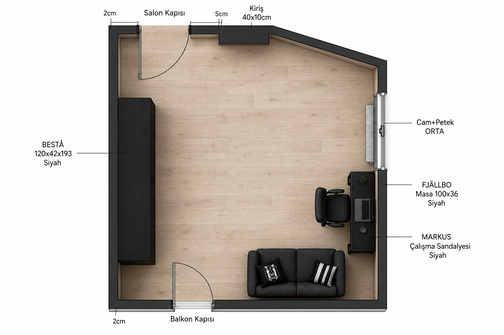
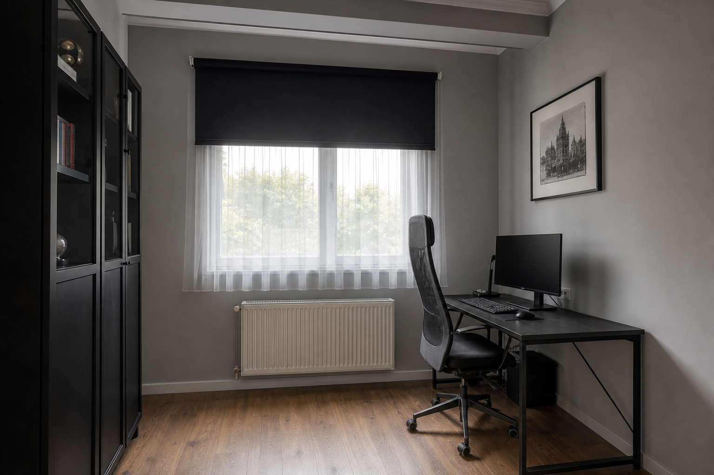
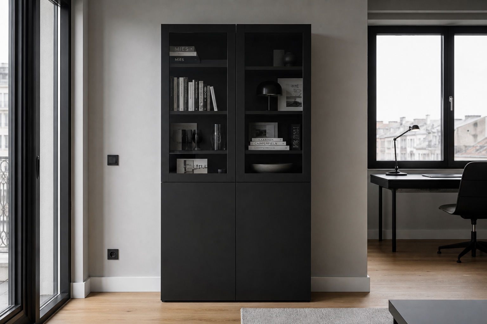

1
FJÄLLBO 100×36 — sağ, petek ALTI
Cam ortada → masa peteğin önüne gelmez. Ortadaki cam/petek bloğunun alt bandına. Bant ≥110 cm olmalı.
Kilitli kroki · üst bakış · iç görünüm · gerçek IKEA
2 cm kapı · 5 cm salon–kiriş · kiriş 40×10 · cam ortada · dikdörtgen kutu değil.
Tasarım yalnız buna göre.

Gerçek ürün ölçüleriyle yerleşim.

Cam ortada → masa peteğin önüne gelmez. Ortadaki cam/petek bloğunun alt bandına. Bant ≥110 cm olmalı.
Koyu gri. Kapı salınımına taşmaz.
Salon ve balkon sola açılır → köşeye değil ortaya. Devrilme demiri şart.
Balkon 2 cm’den başlar, salınım sola. Sağdaki boş duvara.
Aynı plana göre — sipariş edeceğin ürünlerle.


IKEA TR / Vivense · Temmuz 2026 fiyatları değişebilir.
Kod 303.397.35 · Sağ duvar, petek altı bant · Önce bantı ölç (≥110 cm)
ikea.com.tr →Kod 702.611.50
ikea.com.tr →Kod 590.594.61 · Sol duvar ortası · Sabitle
ikea.com.tr →Alt duvar, balkon sağı · Vivense
vivense.com →4 duvar · Kiriş aynı veya sadece çıkıntıda mat siyah · Kapılar beyaz
filliboya.com →Cam enini ölç → o ene sipariş
ölçüyle al →